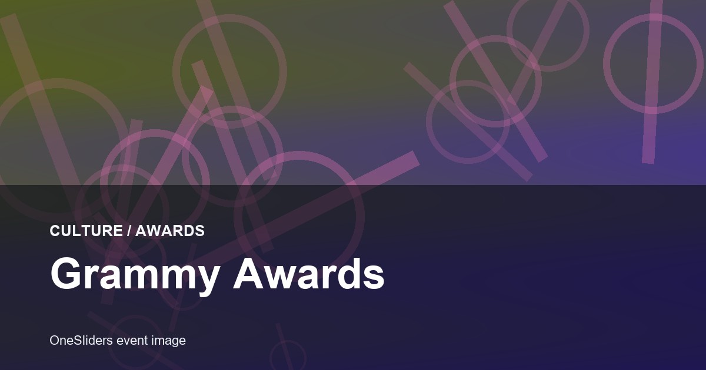
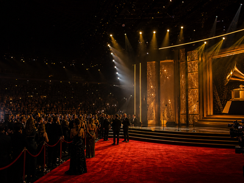

Awards event guide
Grammy Awards
A compact OneSliders guide to Grammy Awards: what it is, how the current edition works and which parts matter most.
First trackedEvergreen event
FrequencyAnnual
Next edition2027
Format sizeProgramme parts
History viewEdition results and parts
Use the year switcher for recent editions. The selected edition stays inside this framed sport view.

More AwardsInterested in more Awards?Explore related events, places and calendar moments.